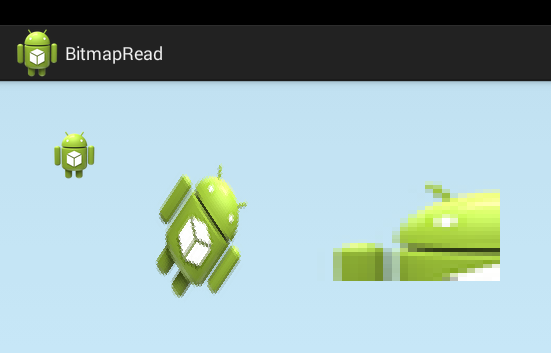

В этом уроке:
- читаем Bitmap
- выводим его на канву
- получаем информацию о нем
Начинаем тему Bitmap. Без нее в рисовании никуда, т.к. Bitmap – это объект, который хранит в себе изображение. Та же канва, с которой мы обычно работаем, это обертка, которая принимает команды от нас и рисует их на Bitmap, который мы видим в результате.
Мы рассмотрим все основные операции с Bitmap и обязательно разберем интересные материалы с официального сайта по этой теме.
В этом уроке начнем с основ. Посмотрим какие методы есть для создания Bitmap из файла, как вывести его на канву и какую инфу о себе может рассказать Bitmap.
Для получения изображения из файла используется фабрика BitmapFactory. У нее есть несколько decode* методов, которые принимают на вход массив байтов, путь к файлу, поток, файловый дескриптор или идентификатор ресурса. И на выходе мы получаем Bitmap.
Можно заметить, что все эти методы имеют также версии с использованием объекта BitmapFactory.Options. Это очень полезная штука, о ней мы отдельно еще поговорим в одном из следующих уроков.
Самые используемые из методов чтения это, конечно, следующие:
decodeFile(String pathName) – получить Bitmap из файла, указав его путь. Т.е. этим методом можем считать картинку с SD-карты. (getExternalStorageDirectory)
decodeResource(Resources res, int id) – получить Bitmap из drawable-ресурса, указав его ID. Этот метод вернет нам картинку из папок res/drawable нашего приложения.
Создадим проект:
Project name: P1571_BitmapRead
Build Target: Android 4.4
Application name: BitmapRead
Package name: ru.startandroid.develop.p1571bitmapread
Create Activity: MainActivity
MainActivity.java:
package ru.startandroid.develop.p1571bitmapread;
import android.app.Activity;
import android.content.Context;
import android.graphics.Bitmap;
import android.graphics.BitmapFactory;
import android.graphics.Canvas;
import android.graphics.Matrix;
import android.graphics.Paint;
import android.graphics.Rect;
import android.os.Bundle;
import android.util.Log;
import android.view.View;
public class MainActivity extends Activity {
@Override
protected void onCreate(Bundle savedInstanceState) {
super.onCreate(savedInstanceState);
setContentView(new DrawView(this));
}
class DrawView extends View {
Paint paint;
Bitmap bitmap;
Rect rectSrc;
Rect rectDst;
Matrix matrix;
public DrawView(Context context) {
super(context);
paint = new Paint(Paint.ANTI_ALIAS_FLAG);
bitmap = BitmapFactory.decodeResource(getResources(), R.drawable.ic_launcher);
String info =
String.format("Info: size = %s x %s, bytes = %s (%s), config = %s",
bitmap.getWidth(),
bitmap.getHeight(),
bitmap.getByteCount(),
bitmap.getRowBytes(),
bitmap.getConfig());
Log.d("log", info);
matrix = new Matrix();
matrix.postRotate(45);
matrix.postScale(2, 3);
matrix.postTranslate(200, 50);
rectSrc = new Rect(0, 0, bitmap.getWidth() / 2, bitmap.getHeight() / 2);
rectDst = new Rect(300, 100, 500, 200);
}
@Override
protected void onDraw(Canvas canvas) {
canvas.drawARGB(80, 102, 204, 255);
canvas.drawBitmap(bitmap, 50, 50, paint);
canvas.drawBitmap(bitmap, matrix, paint);
canvas.drawBitmap(bitmap, rectSrc, rectDst, paint);
}
}
}В конструкторе DrawView мы получаем Bitmap из drawable-ресурса ic_launcher. На вход методу decodeResource мы передали объект ресурсов и ID требуемого ресурса.
Далее в переменную info сформируем строку с инфой о картинке:
getWidth – ширина картинки в px
getHeight – высота картинки в px
getByteCount – число байт, которое занимает картинка (доступен только с API Level 12)
getRowBytes – число байт в одной строке картинки
getConfig – инфа о способе хранения данных о пикселах
И выводим эту инфу в лог.
Настраиваем матрицу, которая повернет картинку на 45 градусов, растянет картинку в два раза в ширину и в три раза в высоту, и переместит ее на 200 вправо и 50 вниз.
Создаем два Rect объекта. rectSrc со сторонами равными половине сторон картинки. Т.е. этот прямоугольник охватывает левую верхнюю четверть картинки. Эту часть мы будем брать для вывода на экран далее в примере. А выводить мы ее будем в прямоугольник rectDst, это просто произвольная область на экране.
В методе onDraw рисуем картинку на канве тремя разными версиями метода drawBitmap. В первом случае просто выводим картинку как есть в точке (50,50). Во втором применяем матрицу, в которой мы уже настроили поворот, трансформацию и перемещение. И третий вариант возьмет от картинки часть, входящую в область rectSrc (мы там задали левую верхнюю четверть) и нарисует ее на канве в области rectDst, применив необходимые трансформации и перемещения.
Запускаем приложение.

Слева-направо видим все три варианта вывода. В первом случае без изменений и в указанной точке. Во втором случае преобразования были описаны в матрице. В третьем случае мы отсекли от картинки часть и нарисовали ее в указанной области, канва сама при этом растянула изображение под размеры области.
Смотрим лог
Info: size = 48 x 48, bytes = 9216 (192), config = ARGB_8888
Размер картинки = 48 (ширина) на 48 (высота). У вас тут могут быть другие цифры, т.к. метод decodeResource учитывает density устройства и вытаскивает картинку из необходимой папки. В моем случае он взял ее из drawable-mdpi.
Далее мы вывели вес картинки в байтах - 9216, и кол-во байтов в одной строке - 192. Тут понятно, что вес картинки = кол-во байтов в строке * высоту = 192 * 48 = 9126.
А если мы разделим кол-во байтов строки на ширину, то получим сколько байтов занимает один пиксел: 192 / 48 = 4 байта.
Это же подтверждает и config = ARGB_8888. Это означает, что на каждый из 4-х ARGB-компонентов пиксела (альфа, красный, зеленый, голубой) выделяется по 8 бит (= 1 байт). Следовательно, пиксел будет весить 4 байта.
Кроме ARGB_8888 есть еще несколько конфигураций:
ALPHA_8 – пиксел содержит в себе инфу только о прозрачности, о цвете здесь инфы нет. Каждый пиксел требует 8 бит (1 байт).
ARGB_4444 - аналог ARGB_8888, только каждому ARGB-компоненту отведено не по 8, а по 4 бита. Соответственно пиксел весит 16 бит (2 байта). С API Level 13 эта конфигурация объявлена устаревшей.
RGB_565 – здесь нет инфы о прозрачности, а трем RGB-компонентам выделено, соответственно по 5,6 и 5 бит. Каждый пиксел будет весить 16 бит или 2 байта.
Все вышенаписанное - это достаточно важные вещи, которые надо понимать и учитывать в разработке. Если, например, ваше приложение работает с картинками, и вы точно знаете, что они будут без прозрачности, то лучше использовать RGB_565. Все ваши картинки в памяти займут в два раза меньше места, чем при использовании дефолтового ARGB_8888. При большом кол-ве картинок это существенная оптимизация!
На размер (а следовательно и вес) изображения также следует обращать внимание. Следите, чтобы ваши картинки в памяти не были размера больше, чем вам нужно. Приведу пример из практики. Как-то пришлось оптимизировать приложение, в котором был экран со списком юзеров с аватарками. Аватарки эти изначально грузились с сайта и кешировались на SD. Для списка использовался memory-кэш, но он переполнялся мгновенно и постоянно подчитывал инфу с SD.
Вскрытие показало, что с сайта картинки грузились в разрешении 200 х 200 и прямо так и сохранялись на SD. В memory-кэш они помещались в том же разрешении, занимая, соответственно, по 200 * 200 * 4 = 160 000 байт каждая! Т.е. 6 картинок в кэше и уже метр памяти занят. А список там на сотни позиций. Конечно, никакого кэша не хватит при скроллинге.
Глянули на layout строки списка. Каждый ImageView, который отображал аватарку, был размером всего 32х32 dp. Т.е. в случае mdpi нам требовалась картинка 32х32 пиксела. Т.е. 32 * 32 * 4 = 4096 байт. Получается, что вместо одной аватарки 200х200 в кэше свободно могли бы разместиться почти 40 аватарок 32х32.
В итоге, при чтении картинок с сайта и сохранении их на SD поставили сразу изменение размера до необходимого, и стало значительно лучше. Еще как вариант, у сайта сразу просить требуемый размер картинки.
В общем, старайтесь использовать минимально-требуемый вам формат и размер. А о том как выбрать формат, поменять размер и использовать кэши мы обязательно поговорим в следующих уроках.